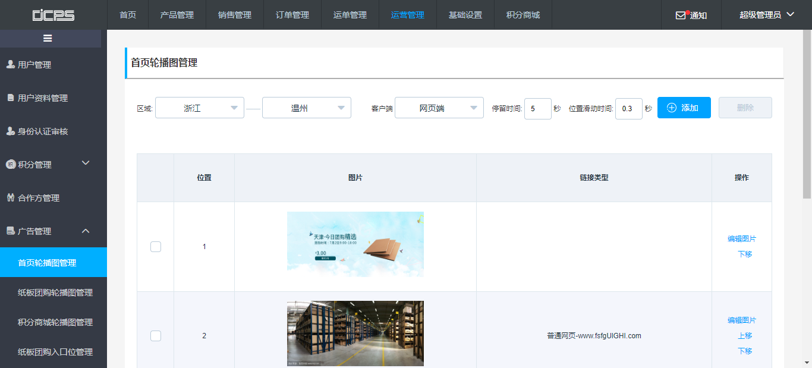
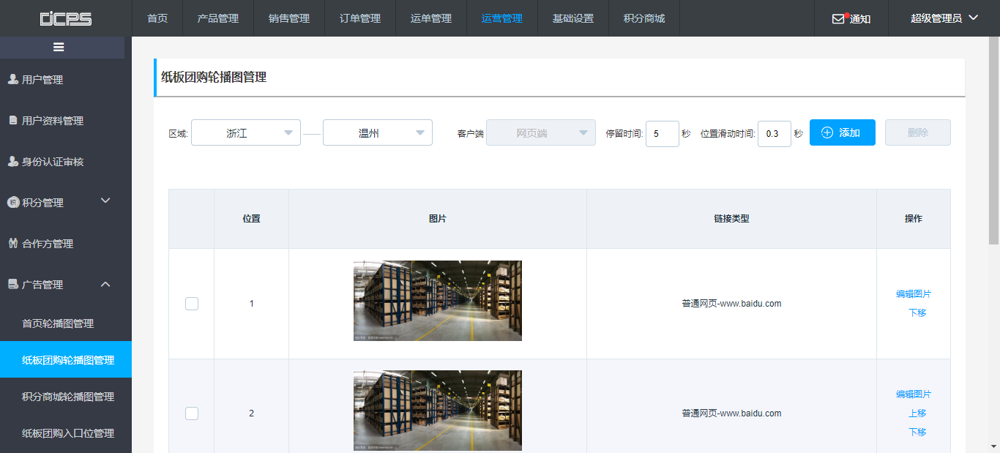
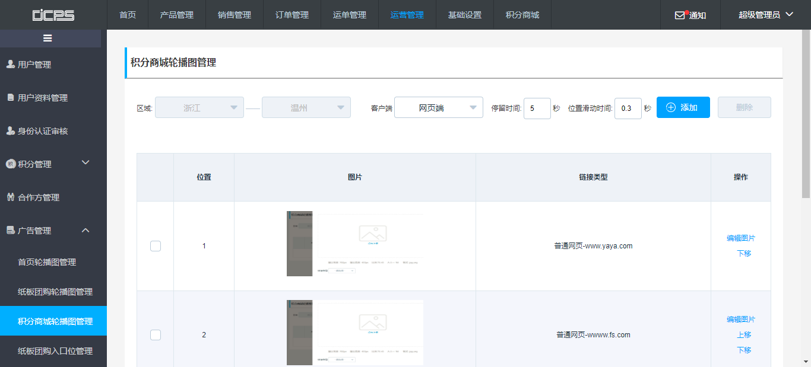
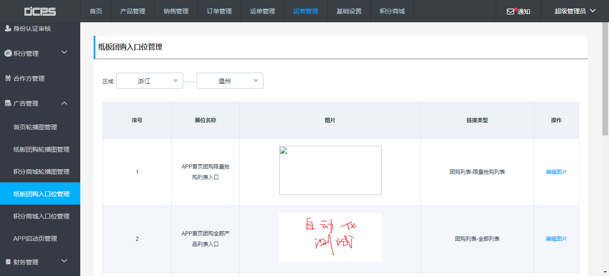
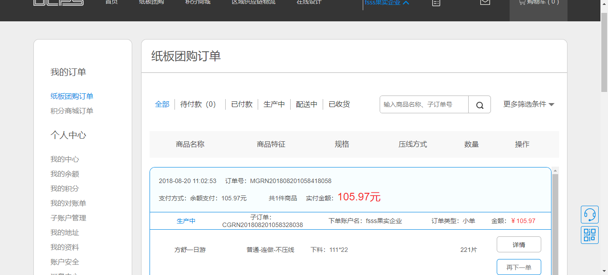

| Status | Timestamp | Details |
|---|---|---|
| low_priority | 2:34:48 PM | 添加首页轮播图脚本开始 |
| low_priority | 2:34:48 PM | 页面强制等待：8000毫秒 |
| low_priority | 2:34:48 PM | x获取网页元素成功，元素定位：//*[@id="header"]/ul/li[6] |
| low_priority | 2:34:48 PM | [[ChromeDriver: chrome on XP (b42eabfcea522209956eafc73745ce7b)] -> xpath: //*[@id="header"]/ul/li[6]]元素被点击 |
| low_priority | 2:34:48 PM | x获取网页元素成功，元素定位：//*[@id="header"]/ul/li[6] |
| low_priority | 2:34:48 PM | [[ChromeDriver: chrome on XP (b42eabfcea522209956eafc73745ce7b)] -> xpath: //*[@id="header"]/ul/li[6]]元素被点击 |
| low_priority | 2:34:48 PM | 点击运营管理 |
| low_priority | 2:34:48 PM | 页面强制等待：2000毫秒 |
| low_priority | 2:34:48 PM | 进入运营管理菜单 |
| low_priority | 2:34:48 PM | x获取网页元素成功，元素定位：//*[@id="menu"]/div/ul/li[6]/ul/li[1] |
| low_priority | 2:34:48 PM | x获取网页元素成功，元素定位：//*[@id="menu"]/div/ul/li[6]/div |
| low_priority | 2:34:48 PM | [[ChromeDriver: chrome on XP (b42eabfcea522209956eafc73745ce7b)] -> xpath: //*[@id="menu"]/div/ul/li[6]/div]元素被点击 |
| low_priority | 2:34:48 PM | 进入广告管理菜单 |
| low_priority | 2:34:48 PM | 页面强制等待：2000毫秒 |
| low_priority | 2:34:48 PM | x获取网页元素成功，元素定位：//*[@id="menu"]/div/ul/li[6]/ul/li[1] |
| low_priority | 2:34:48 PM | [[ChromeDriver: chrome on XP (b42eabfcea522209956eafc73745ce7b)] -> xpath: //*[@id="menu"]/div/ul/li[6]/ul/li[1]]元素被点击 |
| low_priority | 2:34:48 PM | 页面强制等待：2000毫秒 |
| low_priority | 2:34:48 PM | x获取网页元素成功，元素定位：//*[@id="tHeader"] |
| low_priority | 2:34:48 PM | 断言验证：验证首页轮播图管理与首页轮播图管理相同 |
| low_priority | 2:34:48 PM | 进入首页轮播图管理页面 |
| low_priority | 2:34:48 PM | 轮播图位置已满，测试结束 |
| low_priority | 2:34:48 PM | 断言验证：验证5与5不相同 |
| low_priority | 2:34:48 PM | 失败截图addSYLB_0820143448.png已保存 |
| low_priority | 2:34:48 PM | 错误截图链接 |
| low_priority | 2:34:48 PM | 错误截图预览: |
| cancel | 2:34:48 PM | java.lang.AssertionError: 轮播图位置已满，请先删除广告位！ at org.testng.Assert.fail(Assert.java:94) at org.testng.Assert.assertNotEquals(Assert.java:758) at common.AssertUtil.assertNotEquals(AssertUtil.java:30) at pages.lunbo.SYLBPage.checkPicNum(SYLBPage.java:94) at pages.lunbo.SYLBPage.addSYLB(SYLBPage.java:49) at test.LunBoTest.addSYLB(LunBoTest.java:56) at sun.reflect.NativeMethodAccessorImpl.invoke0(Native Method) at sun.reflect.NativeMethodAccessorImpl.invoke(NativeMethodAccessorImpl.java:62) at sun.reflect.DelegatingMethodAccessorImpl.invoke(DelegatingMethodAccessorImpl.java:43) at java.lang.reflect.Method.invoke(Method.java:498) at org.testng.internal.MethodInvocationHelper.invokeMethod(MethodInvocationHelper.java:80) at org.testng.internal.Invoker.invokeMethod(Invoker.java:714) at org.testng.internal.Invoker.invokeTestMethod(Invoker.java:901) at org.testng.internal.Invoker.invokeTestMethods(Invoker.java:1231) at org.testng.internal.TestMethodWorker.invokeTestMethods(TestMethodWorker.java:127) at org.testng.internal.TestMethodWorker.run(TestMethodWorker.java:111) at org.testng.TestRunner.privateRun(TestRunner.java:767) at org.testng.TestRunner.run(TestRunner.java:617) at org.testng.SuiteRunner.runTest(SuiteRunner.java:334) at org.testng.SuiteRunner.runSequentially(SuiteRunner.java:329) at org.testng.SuiteRunner.privateRun(SuiteRunner.java:291) at org.testng.SuiteRunner.run(SuiteRunner.java:240) at org.testng.SuiteRunnerWorker.runSuite(SuiteRunnerWorker.java:52) at org.testng.SuiteRunnerWorker.run(SuiteRunnerWorker.java:86) at org.testng.TestNG.runSuitesSequentially(TestNG.java:1198) at org.testng.TestNG.runSuitesLocally(TestNG.java:1123) at org.testng.TestNG.run(TestNG.java:1031) at org.testng.remote.AbstractRemoteTestNG.run(AbstractRemoteTestNG.java:132) at org.testng.remote.RemoteTestNG.initAndRun(RemoteTestNG.java:236) at org.testng.remote.RemoteTestNG.main(RemoteTestNG.java:81) |
| Status | Timestamp | Details |
|---|---|---|
| low_priority | 2:35:05 PM | 添加纸板团购轮播图脚本开始 |
| low_priority | 2:35:05 PM | 页面强制等待：8000毫秒 |
| low_priority | 2:35:05 PM | x获取网页元素成功，元素定位：//*[@id="header"]/ul/li[6] |
| low_priority | 2:35:05 PM | [[ChromeDriver: chrome on XP (b42eabfcea522209956eafc73745ce7b)] -> xpath: //*[@id="header"]/ul/li[6]]元素被点击 |
| low_priority | 2:35:05 PM | x获取网页元素成功，元素定位：//*[@id="header"]/ul/li[6] |
| low_priority | 2:35:05 PM | [[ChromeDriver: chrome on XP (b42eabfcea522209956eafc73745ce7b)] -> xpath: //*[@id="header"]/ul/li[6]]元素被点击 |
| low_priority | 2:35:05 PM | 点击运营管理 |
| low_priority | 2:35:05 PM | 页面强制等待：2000毫秒 |
| low_priority | 2:35:05 PM | x获取网页元素成功，元素定位：//*[@id="menu"]/div/ul/li[6]/ul/li[1] |
| low_priority | 2:35:05 PM | 进入广告管理菜单 |
| low_priority | 2:35:05 PM | 页面强制等待：2000毫秒 |
| low_priority | 2:35:05 PM | x获取网页元素成功，元素定位：//*[@id="menu"]/div/ul/li[6]/ul/li[2] |
| low_priority | 2:35:05 PM | [[ChromeDriver: chrome on XP (b42eabfcea522209956eafc73745ce7b)] -> xpath: //*[@id="menu"]/div/ul/li[6]/ul/li[2]]元素被点击 |
| low_priority | 2:35:05 PM | 页面强制等待：2000毫秒 |
| low_priority | 2:35:05 PM | x获取网页元素成功，元素定位：//*[@id="tHeader"] |
| low_priority | 2:35:05 PM | 断言验证：验证纸板团购轮播图管理与纸板团购轮播图管理相同 |
| low_priority | 2:35:05 PM | 进入纸板团购轮播图管理页面 |
| low_priority | 2:35:05 PM | 轮播图位置已满，测试结束 |
| low_priority | 2:35:05 PM | 断言验证：验证5与5不相同 |
| low_priority | 2:35:05 PM | 失败截图addZBTG_0820143505.png已保存 |
| low_priority | 2:35:05 PM | 错误截图链接 |
| low_priority | 2:35:05 PM | 错误截图预览: |
| cancel | 2:35:05 PM | java.lang.AssertionError: 轮播图位置已满，请先删除广告位！ at org.testng.Assert.fail(Assert.java:94) at org.testng.Assert.assertNotEquals(Assert.java:758) at common.AssertUtil.assertNotEquals(AssertUtil.java:30) at pages.lunbo.SYLBPage.checkPicNum(SYLBPage.java:94) at pages.lunbo.ZBTGPage.addZBTG(ZBTGPage.java:31) at test.LunBoTest.addZBTG(LunBoTest.java:68) at sun.reflect.NativeMethodAccessorImpl.invoke0(Native Method) at sun.reflect.NativeMethodAccessorImpl.invoke(NativeMethodAccessorImpl.java:62) at sun.reflect.DelegatingMethodAccessorImpl.invoke(DelegatingMethodAccessorImpl.java:43) at java.lang.reflect.Method.invoke(Method.java:498) at org.testng.internal.MethodInvocationHelper.invokeMethod(MethodInvocationHelper.java:80) at org.testng.internal.Invoker.invokeMethod(Invoker.java:714) at org.testng.internal.Invoker.invokeTestMethod(Invoker.java:901) at org.testng.internal.Invoker.invokeTestMethods(Invoker.java:1231) at org.testng.internal.TestMethodWorker.invokeTestMethods(TestMethodWorker.java:127) at org.testng.internal.TestMethodWorker.run(TestMethodWorker.java:111) at org.testng.TestRunner.privateRun(TestRunner.java:767) at org.testng.TestRunner.run(TestRunner.java:617) at org.testng.SuiteRunner.runTest(SuiteRunner.java:334) at org.testng.SuiteRunner.runSequentially(SuiteRunner.java:329) at org.testng.SuiteRunner.privateRun(SuiteRunner.java:291) at org.testng.SuiteRunner.run(SuiteRunner.java:240) at org.testng.SuiteRunnerWorker.runSuite(SuiteRunnerWorker.java:52) at org.testng.SuiteRunnerWorker.run(SuiteRunnerWorker.java:86) at org.testng.TestNG.runSuitesSequentially(TestNG.java:1198) at org.testng.TestNG.runSuitesLocally(TestNG.java:1123) at org.testng.TestNG.run(TestNG.java:1031) at org.testng.remote.AbstractRemoteTestNG.run(AbstractRemoteTestNG.java:132) at org.testng.remote.RemoteTestNG.initAndRun(RemoteTestNG.java:236) at org.testng.remote.RemoteTestNG.main(RemoteTestNG.java:81) |
| Status | Timestamp | Details |
|---|---|---|
| low_priority | 2:35:21 PM | 添加积分商城轮播图脚本开始 |
| low_priority | 2:35:21 PM | 页面强制等待：8000毫秒 |
| low_priority | 2:35:21 PM | x获取网页元素成功，元素定位：//*[@id="header"]/ul/li[6] |
| low_priority | 2:35:21 PM | [[ChromeDriver: chrome on XP (b42eabfcea522209956eafc73745ce7b)] -> xpath: //*[@id="header"]/ul/li[6]]元素被点击 |
| low_priority | 2:35:21 PM | x获取网页元素成功，元素定位：//*[@id="header"]/ul/li[6] |
| low_priority | 2:35:21 PM | [[ChromeDriver: chrome on XP (b42eabfcea522209956eafc73745ce7b)] -> xpath: //*[@id="header"]/ul/li[6]]元素被点击 |
| low_priority | 2:35:21 PM | 点击运营管理 |
| low_priority | 2:35:21 PM | 页面强制等待：2000毫秒 |
| low_priority | 2:35:21 PM | x获取网页元素成功，元素定位：//*[@id="menu"]/div/ul/li[6]/ul/li[1] |
| low_priority | 2:35:21 PM | 进入广告管理菜单 |
| low_priority | 2:35:21 PM | 页面强制等待：2000毫秒 |
| low_priority | 2:35:21 PM | x获取网页元素成功，元素定位：//*[@id="menu"]/div/ul/li[6]/ul/li[3] |
| low_priority | 2:35:21 PM | [[ChromeDriver: chrome on XP (b42eabfcea522209956eafc73745ce7b)] -> xpath: //*[@id="menu"]/div/ul/li[6]/ul/li[3]]元素被点击 |
| low_priority | 2:35:21 PM | 页面强制等待：2000毫秒 |
| low_priority | 2:35:21 PM | x获取网页元素成功，元素定位：//*[@id="tHeader"] |
| low_priority | 2:35:21 PM | 断言验证：验证积分商城轮播图管理与积分商城轮播图管理相同 |
| low_priority | 2:35:21 PM | 积分商城团购轮播图管理页面 |
| low_priority | 2:35:21 PM | 轮播图位置已满，测试结束 |
| low_priority | 2:35:21 PM | 断言验证：验证5与5不相同 |
| low_priority | 2:35:21 PM | 失败截图addJFSC_0820143521.png已保存 |
| low_priority | 2:35:21 PM | 错误截图链接 |
| low_priority | 2:35:21 PM | 错误截图预览: |
| cancel | 2:35:21 PM | java.lang.AssertionError: 轮播图位置已满，请先删除广告位！ at org.testng.Assert.fail(Assert.java:94) at org.testng.Assert.assertNotEquals(Assert.java:758) at common.AssertUtil.assertNotEquals(AssertUtil.java:30) at pages.lunbo.SYLBPage.checkPicNum(SYLBPage.java:94) at pages.lunbo.JFSCPage.addJFSC(JFSCPage.java:27) at test.LunBoTest.addJFSC(LunBoTest.java:80) at sun.reflect.NativeMethodAccessorImpl.invoke0(Native Method) at sun.reflect.NativeMethodAccessorImpl.invoke(NativeMethodAccessorImpl.java:62) at sun.reflect.DelegatingMethodAccessorImpl.invoke(DelegatingMethodAccessorImpl.java:43) at java.lang.reflect.Method.invoke(Method.java:498) at org.testng.internal.MethodInvocationHelper.invokeMethod(MethodInvocationHelper.java:80) at org.testng.internal.Invoker.invokeMethod(Invoker.java:714) at org.testng.internal.Invoker.invokeTestMethod(Invoker.java:901) at org.testng.internal.Invoker.invokeTestMethods(Invoker.java:1231) at org.testng.internal.TestMethodWorker.invokeTestMethods(TestMethodWorker.java:127) at org.testng.internal.TestMethodWorker.run(TestMethodWorker.java:111) at org.testng.TestRunner.privateRun(TestRunner.java:767) at org.testng.TestRunner.run(TestRunner.java:617) at org.testng.SuiteRunner.runTest(SuiteRunner.java:334) at org.testng.SuiteRunner.runSequentially(SuiteRunner.java:329) at org.testng.SuiteRunner.privateRun(SuiteRunner.java:291) at org.testng.SuiteRunner.run(SuiteRunner.java:240) at org.testng.SuiteRunnerWorker.runSuite(SuiteRunnerWorker.java:52) at org.testng.SuiteRunnerWorker.run(SuiteRunnerWorker.java:86) at org.testng.TestNG.runSuitesSequentially(TestNG.java:1198) at org.testng.TestNG.runSuitesLocally(TestNG.java:1123) at org.testng.TestNG.run(TestNG.java:1031) at org.testng.remote.AbstractRemoteTestNG.run(AbstractRemoteTestNG.java:132) at org.testng.remote.RemoteTestNG.initAndRun(RemoteTestNG.java:236) at org.testng.remote.RemoteTestNG.main(RemoteTestNG.java:81) |
| Status | Timestamp | Details |
|---|---|---|
| low_priority | 2:35:38 PM | 编辑纸板团购入口轮播图脚本开始 |
| low_priority | 2:35:38 PM | 页面强制等待：8000毫秒 |
| low_priority | 2:35:38 PM | x获取网页元素成功，元素定位：//*[@id="header"]/ul/li[6] |
| low_priority | 2:35:38 PM | [[ChromeDriver: chrome on XP (b42eabfcea522209956eafc73745ce7b)] -> xpath: //*[@id="header"]/ul/li[6]]元素被点击 |
| low_priority | 2:35:38 PM | x获取网页元素成功，元素定位：//*[@id="header"]/ul/li[6] |
| low_priority | 2:35:38 PM | [[ChromeDriver: chrome on XP (b42eabfcea522209956eafc73745ce7b)] -> xpath: //*[@id="header"]/ul/li[6]]元素被点击 |
| low_priority | 2:35:38 PM | 点击运营管理 |
| low_priority | 2:35:38 PM | 页面强制等待：2000毫秒 |
| low_priority | 2:35:38 PM | x获取网页元素成功，元素定位：//*[@id="menu"]/div/ul/li[6]/ul/li[1] |
| low_priority | 2:35:38 PM | 进入广告管理菜单 |
| low_priority | 2:35:38 PM | 页面强制等待：2000毫秒 |
| low_priority | 2:35:38 PM | x获取网页元素成功，元素定位：//*[@id="menu"]/div/ul/li[1] |
| low_priority | 2:35:38 PM | x获取网页元素成功，元素定位：//*[@id="menu"]/div/ul/li[8]/div/span |
| low_priority | 2:35:38 PM | 页面从[[ChromeDriver: chrome on XP (b42eabfcea522209956eafc73745ce7b)] -> xpath: //*[@id="menu"]/div/ul/li[1]]移动到[[ChromeDriver: chrome on XP (b42eabfcea522209956eafc73745ce7b)] -> xpath: //*[@id="menu"]/div/ul/li[8]/div/span] |
| low_priority | 2:35:38 PM | x获取网页元素成功，元素定位：//*[@id="menu"]/div/ul/li[6]/ul/li[4] |
| low_priority | 2:35:38 PM | [[ChromeDriver: chrome on XP (b42eabfcea522209956eafc73745ce7b)] -> xpath: //*[@id="menu"]/div/ul/li[6]/ul/li[4]]元素被点击 |
| low_priority | 2:35:38 PM | 页面强制等待：2000毫秒 |
| low_priority | 2:35:38 PM | x获取网页元素成功，元素定位：//*[@id="home"]/div[2]/div/div/div[2]/div[2]/div[1]/div/div[3]/table/tbody/tr[2]/td[5]/div/button |
| low_priority | 2:35:38 PM | x获取网页元素失败，元素定位：//*[@id="home"]/div[2]/div/div/div[2]/div[2]/div[1]/div/div[3]/table/tbody/tr[2]/td[5]/div/button |
| low_priority | 2:35:38 PM | 断言验证：验证false与true相同 |
| low_priority | 2:35:38 PM | 失败截图addZBRK_0820143538.png已保存 |
| low_priority | 2:35:38 PM | 错误截图链接 |
| low_priority | 2:35:38 PM | 错误截图预览: |
| cancel | 2:35:38 PM | java.lang.AssertionError: 元素定位失败！ expected [true] but found [false] at org.testng.Assert.fail(Assert.java:94) at org.testng.Assert.failNotEquals(Assert.java:494) at org.testng.Assert.assertEquals(Assert.java:123) at common.AssertUtil.assertEquals(AssertUtil.java:25) at pages.BasePage.getElement(BasePage.java:348) at pages.lunbo.JFTGRKPage.getEdit(JFTGRKPage.java:45) at pages.lunbo.JFTGRKPage.addJFRK(JFTGRKPage.java:30) at test.LunBoTest.addZBRK(LunBoTest.java:92) at sun.reflect.NativeMethodAccessorImpl.invoke0(Native Method) at sun.reflect.NativeMethodAccessorImpl.invoke(NativeMethodAccessorImpl.java:62) at sun.reflect.DelegatingMethodAccessorImpl.invoke(DelegatingMethodAccessorImpl.java:43) at java.lang.reflect.Method.invoke(Method.java:498) at org.testng.internal.MethodInvocationHelper.invokeMethod(MethodInvocationHelper.java:80) at org.testng.internal.Invoker.invokeMethod(Invoker.java:714) at org.testng.internal.Invoker.invokeTestMethod(Invoker.java:901) at org.testng.internal.Invoker.invokeTestMethods(Invoker.java:1231) at org.testng.internal.TestMethodWorker.invokeTestMethods(TestMethodWorker.java:127) at org.testng.internal.TestMethodWorker.run(TestMethodWorker.java:111) at org.testng.TestRunner.privateRun(TestRunner.java:767) at org.testng.TestRunner.run(TestRunner.java:617) at org.testng.SuiteRunner.runTest(SuiteRunner.java:334) at org.testng.SuiteRunner.runSequentially(SuiteRunner.java:329) at org.testng.SuiteRunner.privateRun(SuiteRunner.java:291) at org.testng.SuiteRunner.run(SuiteRunner.java:240) at org.testng.SuiteRunnerWorker.runSuite(SuiteRunnerWorker.java:52) at org.testng.SuiteRunnerWorker.run(SuiteRunnerWorker.java:86) at org.testng.TestNG.runSuitesSequentially(TestNG.java:1198) at org.testng.TestNG.runSuitesLocally(TestNG.java:1123) at org.testng.TestNG.run(TestNG.java:1031) at org.testng.remote.AbstractRemoteTestNG.run(AbstractRemoteTestNG.java:132) at org.testng.remote.RemoteTestNG.initAndRun(RemoteTestNG.java:236) at org.testng.remote.RemoteTestNG.main(RemoteTestNG.java:81) |
| Status | Timestamp | Details |
|---|---|---|
| low_priority | 2:36:32 PM | 团购下单脚本开始 |
| low_priority | 2:36:32 PM | x获取网页元素成功，元素定位：/html/body/div[1]/div[1]/div/div[2]/div[2]/div[2]/div[1]/span[2] |
| low_priority | 2:36:32 PM | [[ChromeDriver: chrome on XP (b42eabfcea522209956eafc73745ce7b)] -> xpath: /html/body/div[1]/div[1]/div/div[2]/div[2]/div[2]/div[1]/span[2]]元素被点击 |
| low_priority | 2:36:32 PM | 确认脚本运行当前路径与期盼路径http://192.168.10.202/personalCenter.html一致 |
| low_priority | 2:36:32 PM | 当前页面url是：http://192.168.10.202/personalCenter.html |
| low_priority | 2:36:32 PM | 断言验证：验证http://192.168.10.202/personalCenter.html与http://192.168.10.202/personalCenter.html相同 |
| low_priority | 2:36:32 PM | 进入我的中心页面 |
| low_priority | 2:36:32 PM | x获取网页元素成功，元素定位：/html/body/div[2]/div/div[1]/ul/li[1]/ul/li[1]/a |
| low_priority | 2:36:32 PM | [[ChromeDriver: chrome on XP (b42eabfcea522209956eafc73745ce7b)] -> xpath: /html/body/div[2]/div/div[1]/ul/li[1]/ul/li[1]/a]元素被点击 |
| low_priority | 2:36:32 PM | 确认脚本运行当前路径与期盼路径http://192.168.10.202/personalCenter.html#!paperboardOrder一致 |
| low_priority | 2:36:32 PM | 当前页面url是：http://192.168.10.202/personalCenter.html#!paperboardOrder |
| low_priority | 2:36:32 PM | 断言验证：验证http://192.168.10.202/personalCenter.html#!paperboardOrder与http://192.168.10.202/personalCenter.html#!paperboardOrder相同 |
| low_priority | 2:36:32 PM | 进入纸板团购订单页面 |
| low_priority | 2:36:32 PM | 页面强制等待：2000毫秒 |
| low_priority | 2:36:32 PM | 进入纸板团购全部订单页面 |
| low_priority | 2:36:32 PM | 页面强制等待：2000毫秒 |
| low_priority | 2:36:32 PM | x获取网页元素成功，元素定位：/html/body/div[2]/div[5]/div[1]/div/div[2]/ul[2]/li[6]/a[2] |
| low_priority | 2:36:32 PM | [[ChromeDriver: chrome on XP (b42eabfcea522209956eafc73745ce7b)] -> xpath: /html/body/div[2]/div[5]/div[1]/div/div[2]/ul[2]/li[6]/a[2]]元素被点击 |
| low_priority | 2:36:32 PM | 页面强制等待：2000毫秒 |
| low_priority | 2:36:32 PM | 页面强制等待：2000毫秒 |
| low_priority | 2:36:32 PM | 进入订单详情页面 |
| low_priority | 2:36:32 PM | 失败截图tuangou_xiadan_0820143632.png已保存 |
| low_priority | 2:36:32 PM | 错误截图链接 |
| low_priority | 2:36:32 PM | 错误截图预览: |
| cancel | 2:36:32 PM | org.openqa.selenium.NoSuchFrameException: no such frame
(Session info: chrome=68.0.3440.106)
(Driver info: chromedriver=2.38.552522 (437e6fbedfa8762dec75e2c5b3ddb86763dc9dcb),platform=Windows NT 10.0.16299 x86_64) (WARNING: The server did not provide any stacktrace information)
Command duration or timeout: 13 milliseconds
Build info: version: '2.53.0', revision: '35ae25b1534ae328c771e0856c93e187490ca824', time: '2016-03-15 10:43:46'
System info: host: 'DESKTOP5C', ip: '172.16.0.16', os.name: 'Windows 10', os.arch: 'amd64', os.version: '10.0', java.version: '1.8.0_112'
Driver info: org.openqa.selenium.chrome.ChromeDriver
Capabilities [{applicationCacheEnabled=false, rotatable=false, mobileEmulationEnabled=false, networkConnectionEnabled=false, chrome={chromedriverVersion=2.38.552522 (437e6fbedfa8762dec75e2c5b3ddb86763dc9dcb), userDataDir=C:\Users\admin\AppData\Local\Temp\scoped_dir13888_24649}, takesHeapSnapshot=true, pageLoadStrategy=normal, databaseEnabled=false, handlesAlerts=true, hasTouchScreen=false, version=68.0.3440.106, platform=XP, browserConnectionEnabled=false, nativeEvents=true, acceptSslCerts=false, acceptInsecureCerts=false, locationContextEnabled=true, webStorageEnabled=true, browserName=chrome, takesScreenshot=true, javascriptEnabled=true, cssSelectorsEnabled=true, setWindowRect=true, unexpectedAlertBehaviour=}]
Session ID: b42eabfcea522209956eafc73745ce7b
at sun.reflect.NativeConstructorAccessorImpl.newInstance0(Native Method)
at sun.reflect.NativeConstructorAccessorImpl.newInstance(NativeConstructorAccessorImpl.java:62)
at sun.reflect.DelegatingConstructorAccessorImpl.newInstance(DelegatingConstructorAccessorImpl.java:45)
at java.lang.reflect.Constructor.newInstance(Constructor.java:423)
at org.openqa.selenium.remote.ErrorHandler.createThrowable(ErrorHandler.java:206)
at org.openqa.selenium.remote.ErrorHandler.throwIfResponseFailed(ErrorHandler.java:158)
at org.openqa.selenium.remote.RemoteWebDriver.execute(RemoteWebDriver.java:678)
at org.openqa.selenium.remote.RemoteWebDriver$RemoteTargetLocator.frame(RemoteWebDriver.java:984)
at pages.tuangou.TGHomePage.dd_again(TGHomePage.java:83)
at test.TGTest.tuangou_xiadan(TGTest.java:41)
at sun.reflect.NativeMethodAccessorImpl.invoke0(Native Method)
at sun.reflect.NativeMethodAccessorImpl.invoke(NativeMethodAccessorImpl.java:62)
at sun.reflect.DelegatingMethodAccessorImpl.invoke(DelegatingMethodAccessorImpl.java:43)
at java.lang.reflect.Method.invoke(Method.java:498)
at org.testng.internal.MethodInvocationHelper.invokeMethod(MethodInvocationHelper.java:80)
at org.testng.internal.Invoker.invokeMethod(Invoker.java:714)
at org.testng.internal.Invoker.invokeTestMethod(Invoker.java:901)
at org.testng.internal.Invoker.invokeTestMethods(Invoker.java:1231)
at org.testng.internal.TestMethodWorker.invokeTestMethods(TestMethodWorker.java:127)
at org.testng.internal.TestMethodWorker.run(TestMethodWorker.java:111)
at org.testng.TestRunner.privateRun(TestRunner.java:767)
at org.testng.TestRunner.run(TestRunner.java:617)
at org.testng.SuiteRunner.runTest(SuiteRunner.java:334)
at org.testng.SuiteRunner.runSequentially(SuiteRunner.java:329)
at org.testng.SuiteRunner.privateRun(SuiteRunner.java:291)
at org.testng.SuiteRunner.run(SuiteRunner.java:240)
at org.testng.SuiteRunnerWorker.runSuite(SuiteRunnerWorker.java:52)
at org.testng.SuiteRunnerWorker.run(SuiteRunnerWorker.java:86)
at org.testng.TestNG.runSuitesSequentially(TestNG.java:1198)
at org.testng.TestNG.runSuitesLocally(TestNG.java:1123)
at org.testng.TestNG.run(TestNG.java:1031)
at org.testng.remote.AbstractRemoteTestNG.run(AbstractRemoteTestNG.java:132)
at org.testng.remote.RemoteTestNG.initAndRun(RemoteTestNG.java:236)
at org.testng.remote.RemoteTestNG.main(RemoteTestNG.java:81)
|
| Status | Timestamp | Details |
|---|---|---|
| low_priority | 2:35:56 PM | 页面强制等待：8000毫秒 |
| low_priority | 2:35:56 PM | x获取网页元素成功，元素定位：//*[@id="header"]/ul/li[6] |
| low_priority | 2:35:56 PM | [[ChromeDriver: chrome on XP (b42eabfcea522209956eafc73745ce7b)] -> xpath: //*[@id="header"]/ul/li[6]]元素被点击 |
| low_priority | 2:35:56 PM | x获取网页元素成功，元素定位：//*[@id="header"]/ul/li[6] |
| low_priority | 2:35:56 PM | [[ChromeDriver: chrome on XP (b42eabfcea522209956eafc73745ce7b)] -> xpath: //*[@id="header"]/ul/li[6]]元素被点击 |
| low_priority | 2:35:56 PM | 点击运营管理 |
| low_priority | 2:35:56 PM | 页面强制等待：2000毫秒 |
| low_priority | 2:35:56 PM | x获取网页元素成功，元素定位：//*[@id="menu"]/div/ul/li[6]/ul/li[1] |
| low_priority | 2:35:56 PM | 进入广告管理菜单 |
| low_priority | 2:35:56 PM | 页面强制等待：2000毫秒 |
| low_priority | 2:35:56 PM | x获取网页元素成功，元素定位：//*[@id="menu"]/div/ul/li[1] |
| low_priority | 2:35:56 PM | x获取网页元素成功，元素定位：//*[@id="menu"]/div/ul/li[8]/div/span |
| low_priority | 2:35:56 PM | 页面从[[ChromeDriver: chrome on XP (b42eabfcea522209956eafc73745ce7b)] -> xpath: //*[@id="menu"]/div/ul/li[1]]移动到[[ChromeDriver: chrome on XP (b42eabfcea522209956eafc73745ce7b)] -> xpath: //*[@id="menu"]/div/ul/li[8]/div/span] |
| low_priority | 2:35:56 PM | x获取网页元素成功，元素定位：//*[@id="menu"]/div/ul/li[6]/ul/li[4] |
| low_priority | 2:35:56 PM | [[ChromeDriver: chrome on XP (b42eabfcea522209956eafc73745ce7b)] -> xpath: //*[@id="menu"]/div/ul/li[6]/ul/li[4]]元素被点击 |
| low_priority | 2:35:56 PM | 页面强制等待：2000毫秒 |
| low_priority | 2:35:56 PM | x获取网页元素成功，元素定位：//*[@id="home"]/div[2]/div/div/div[2]/div[2]/div[1]/div/div[3]/table/tbody/tr[2]/td[5]/div/button |
| low_priority | 2:35:56 PM | [[ChromeDriver: chrome on XP (b42eabfcea522209956eafc73745ce7b)] -> xpath: //*[@id="home"]/div[2]/div/div/div[2]/div[2]/div[1]/div/div[3]/table/tbody/tr[2]/td[5]/div/button]元素被点击 |
| low_priority | 2:35:56 PM | 点击第二行编辑按钮 |
| low_priority | 2:35:56 PM | x获取网页元素成功，元素定位：//*[@id="home"]/div[2]/div/div/div[2]/div[2]/div[2]/div[1]/div/div[1]/span |
| low_priority | 2:35:56 PM | 断言验证：验证编辑图片与编辑图片相同 |
| low_priority | 2:35:56 PM | 打开编辑窗口，测试标题与需求一致 |
| low_priority | 2:35:56 PM | x获取网页元素成功，元素定位：//*[@id="home"]/div[2]/div/div/div[2]/div[2]/div[2]/div[1]/div/div[2]/div[1]/div/div/input |
| low_priority | 2:35:56 PM | 图片添加成功 |
| low_priority | 2:35:56 PM | x获取网页元素成功，元素定位：//*[@id="home"]/div[2]/div/div/div[2]/div[2]/div[2]/div[1]/div/div[2]/div[5]/button[2] |
| low_priority | 2:35:56 PM | [[ChromeDriver: chrome on XP (b42eabfcea522209956eafc73745ce7b)] -> xpath: //*[@id="home"]/div[2]/div/div/div[2]/div[2]/div[2]/div[1]/div/div[2]/div[5]/button[2]]元素被点击 |
| low_priority | 2:35:56 PM | 图片编辑成功 |
| check_circle | 2:35:56 PM | Test passed |
| Status | Timestamp | Details |
|---|---|---|
| low_priority | 2:36:13 PM | 页面强制等待：8000毫秒 |
| low_priority | 2:36:13 PM | x获取网页元素成功，元素定位：//*[@id="header"]/ul/li[6] |
| low_priority | 2:36:13 PM | [[ChromeDriver: chrome on XP (b42eabfcea522209956eafc73745ce7b)] -> xpath: //*[@id="header"]/ul/li[6]]元素被点击 |
| low_priority | 2:36:13 PM | x获取网页元素成功，元素定位：//*[@id="header"]/ul/li[6] |
| low_priority | 2:36:13 PM | [[ChromeDriver: chrome on XP (b42eabfcea522209956eafc73745ce7b)] -> xpath: //*[@id="header"]/ul/li[6]]元素被点击 |
| low_priority | 2:36:13 PM | 点击运营管理 |
| low_priority | 2:36:13 PM | 页面强制等待：2000毫秒 |
| low_priority | 2:36:13 PM | x获取网页元素成功，元素定位：//*[@id="menu"]/div/ul/li[6]/ul/li[1] |
| low_priority | 2:36:13 PM | 进入广告管理菜单 |
| low_priority | 2:36:13 PM | 开始编辑app启动页 |
| low_priority | 2:36:13 PM | 页面强制等待：2000毫秒 |
| low_priority | 2:36:13 PM | x获取网页元素成功，元素定位：//*[@id="menu"]/div/ul/li[1] |
| low_priority | 2:36:13 PM | x获取网页元素成功，元素定位：//*[@id="menu"]/div/ul/li[8]/div/span |
| low_priority | 2:36:13 PM | 页面从[[ChromeDriver: chrome on XP (b42eabfcea522209956eafc73745ce7b)] -> xpath: //*[@id="menu"]/div/ul/li[1]]移动到[[ChromeDriver: chrome on XP (b42eabfcea522209956eafc73745ce7b)] -> xpath: //*[@id="menu"]/div/ul/li[8]/div/span] |
| low_priority | 2:36:13 PM | x获取网页元素成功，元素定位：//*[@id="menu"]/div/ul/li[6]/ul/li[6] |
| low_priority | 2:36:13 PM | [[ChromeDriver: chrome on XP (b42eabfcea522209956eafc73745ce7b)] -> xpath: //*[@id="menu"]/div/ul/li[6]/ul/li[6]]元素被点击 |
| low_priority | 2:36:13 PM | 页面强制等待：2000毫秒 |
| low_priority | 2:36:13 PM | 下移屏幕 |
| low_priority | 2:36:13 PM | x获取网页元素成功，元素定位：//*[@id="home"]/div[2]/div/div/div[2]/div[3]/div[1]/div/div/input |
| low_priority | 2:36:13 PM | 图片添加成功 |
| low_priority | 2:36:13 PM | x获取网页元素成功，元素定位：//*[@id="home"]/div[2]/div/div/div[2]/div[3]/div[3]/button |
| low_priority | 2:36:13 PM | [[ChromeDriver: chrome on XP (b42eabfcea522209956eafc73745ce7b)] -> xpath: //*[@id="home"]/div[2]/div/div/div[2]/div[3]/div[3]/button]元素被点击 |
| check_circle | 2:36:13 PM | Test passed |
| Timestamp | TestName | Status |
|---|---|---|
| Aug 20, 2018 2:36:22 PM | tuangou_xiadan | |
| Name | Value |
|---|---|
| os.name | Windows 10 |
| os.arch | amd64 |
| os.version | 10.0 |
| java.version | 1.8.0_112 |
| java.home | D:\programs\java\jdk1.8\jre |
| user.name | admin |
| user.dir | C:\Users\admin\git\ui\uiweb |